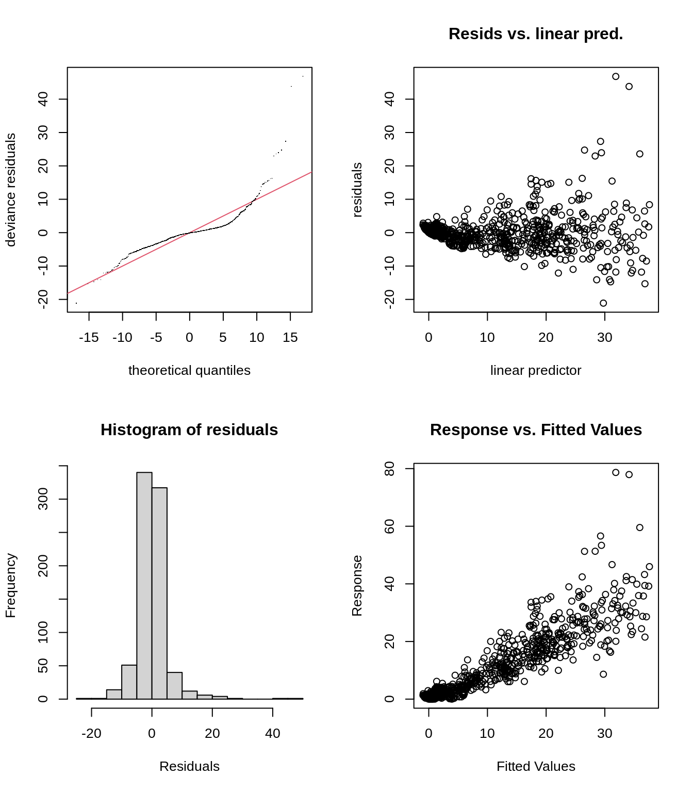

Chapter 10 Changing the basis
To model a non-linear smooth variable or surface, smooth functions can be built in different ways:
The smooth function s() models a 1-dimensional smooth or for modelling interactions among variables measured using the same unit and the same scale. This is the smooth function we have been using throughout this workshop.
There are two other smooth functions: te() and ti(), which can both be used to model 2- or n-dimensional interaction surfaces of variables. The function te() is useful when variables are not on the same scale, and when interactions include main effects. The function ti() is best for modelling interaction surfaces that do not include the main effects.
The smooth functions have several parameters that can be set to change their behaviour. The most common parameters are:
k: basis dimension
- Determines the maximum number of base functions used to build the curve.
- Sets the wiggliness of a smooth, in a trade-off with the smoothing parameter.
- The \(k\) should always be less than the number of unique data points.
- The complexity (i.e. non-linearity) of a smooth function in a fitted model is reflected by its effective degrees of freedom (EDF).
bs specifies the type of basis functions.
- The default for s() is tp (thin plate regression spline).
- The default for te() and ti() is cr (cubic regression spline).
When using te() and ti() basis function, we also need to set the parameter d, which specifies that predictors in the interaction are on the same scale or dimension.
- For example, in te(Time, width, height, d=c(1,2)), indicates that width and height are one the same scale, but not Time.
10.1 Example: Cyclical data
When modelling cyclical data, you generally want the predictor to match at both ends. To achieve this, we need to change the basis function.
Let’s use a time series of climate data, with monthly measurements, to find a temporal trend in yearly temperature. We’ll use the Nottingham temperature
time series for this, which is included in R:
See ?nottem for a more complete description of this dataset.
Let us begin by plotting the monthly temperature fluctuations for every year in the nottem dataset:
# the number of years of data (20 years)
n_years <- length(nottem)/12
# categorical variable coding for the 12 months of the
# year, for every year sampled (so, a sequence 1 to 12
# repeated for 20 years).
nottem_month <- rep(1:12, times = n_years)
# the year corresponding to each month in nottem_month
nottem_year <- rep(1920:(1920 + n_years - 1), each = 12)
# Plot the time series
qplot(x = nottem_month, y = nottem, colour = factor(nottem_year),
geom = "line") + theme_bw()
We can model both the cyclic change of temperature across months and the non-linear trend through years, using a cyclical cubic spline, or cc, for the month variable and a regular smooth for the year variable.
year_gam <- gam(nottem ~ s(nottem_year) + s(nottem_month, bs = "cc"),
method = "REML")
summary(year_gam)$s.table## edf Ref.df F p-value
## s(nottem_year) 1.621375 2.011475 2.850888 0.06141004
## s(nottem_month) 6.855132 8.000000 393.119285 0.00000000There is about 1-1.5 degree rise in temperature over the period (Panel 1), but within a given year there is about 20 degrees variation in temperature, on average (Panel 2). The actual data vary around these values, and this is the unexplained variance.
Here we can see one of the very interesting bonuses of using GAMs. We can either plot the response surface (fitted values) or the terms (contribution of each covariate) as shown here. You can imagine these as plots of the changing regression coefficients, and how their contribution (or effect size) varies over time. In the first plot, we see that positive contributions of temperature occurred post-1930.
Visualising variable contributions
Simpson and Anderson (2009) modelled paleolimnological data with GAMs (see Fig.3c), and plotted the contribution (effect) of temperature on algal assemblages in lakes to illustrate how significant contributions only occurred during two extreme cold events.
That is, the contribution is significant when the confidence intervals do not overlap zero, which occurs at around 300 and 100 B.C. in Simpson and Anderson (2009).
This allowed the authors to not only determine how much variance was explained by temperature over the last few centuries, but also to pinpoint when in time this effect was significant.
If of interest to you, the code to plot either the response surface (type = "response") or the terms (type = "terms") is given below. When type = "terms" is selected, you obtain the same figure as above.
pred <- predict(year_gam, type = "terms", se = TRUE)
I <- order(nottem_year)
plusCI <- I(pred$fit[, 1] + 1.96 * pred$se[, 1])
minusCI <- I(pred$fit[, 1] - 1.96 * pred$se[, 1])
xx <- c(nottem_year[I], rev(nottem_year[I]))
yy <- c(plusCI[I], rev(minusCI[I]))
plot(xx, yy, type = "n", cex.axis = 1.2, xlab = "Year", ylab = "Temperature")
polygon(xx, yy, col = "light blue", border = "light blue")
lines(nottem_year[I], pred$fit[, 1][I], lty = 1, lwd = 2)
abline(h = 0, lty = 2)
References
Simpson, Gavin L., and N. J. Anderson. 2009. “Deciphering the Effect of Climate Change and Separating the Influence of Confounding Factors in Sediment Core Records Using Additive Models.” Limnology and Oceanography 54 (6part2): 2529–41. https://doi.org/https://doi.org/10.4319/lo.2009.54.6_part_2.2529.